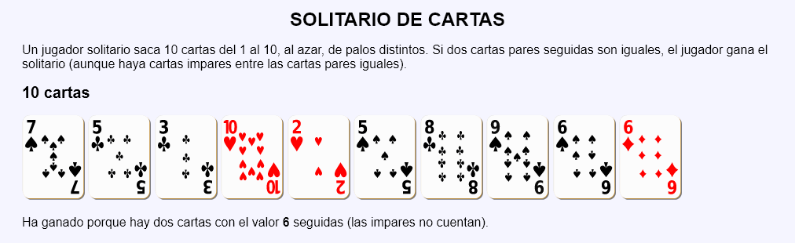
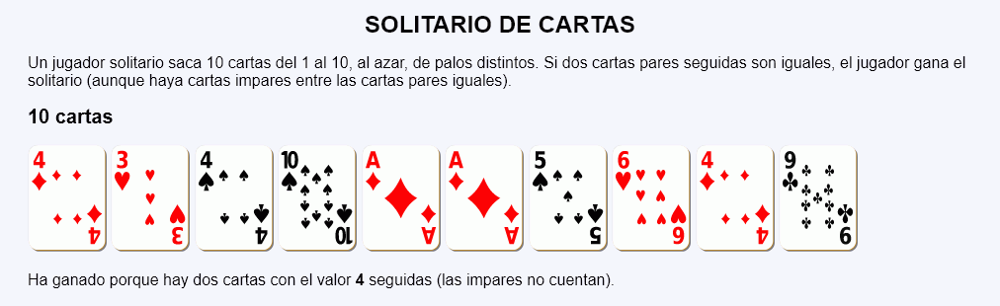
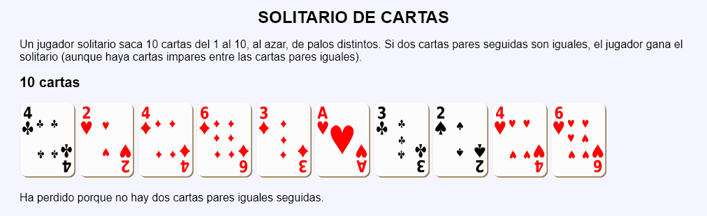

En este ejercicio se debe crear un programa que simule una partida de un solitario de cartas. El juego consiste en mostrar 10 cartas seguidas, con valores y palos al azar. Se gana el solitario si hay dos caras pares del mismo número seguidas, independientemente del número de cartas impares que haya entre ellas.
Solitario de cartas - Comentarios
El programa debe:
Mostrar una partida de este solitario.
Mostrar las cartas obtenidas por el jugador.
Indicar si se ha ganado o no el solitario.
En caso de ganar el solitario, indicar el número de la carta par repetida.
Capturas de pantalla de ejemplo:



Solitario de cartas - Ejemplos de código HTML
<p>
<img src="img/cartas/p10.svg" alt="10 de picas" width="80">
<img src="img/cartas/t10.svg" alt="10 de tréboles" width="80">
...
<img src="img/cartas/c10.svg" alt="10 de corazones" width="80">
<img src="img/cartas/p8.svg" alt="8 de picas" width="80">
</p>
<p>Ha ganado porque hay dos cartas con el valor <strong>10</strong> seguidas (las impares no cuentan).</p>
Solitario de cartas - Ejemplo de programa
Nota: El día del examen los alumnos no tienen acceso a este ejemplo, solamente tienen acceso a las capturas del apartado anterior.
Un ejemplo de programa puede probarse en la ventana siguiente: